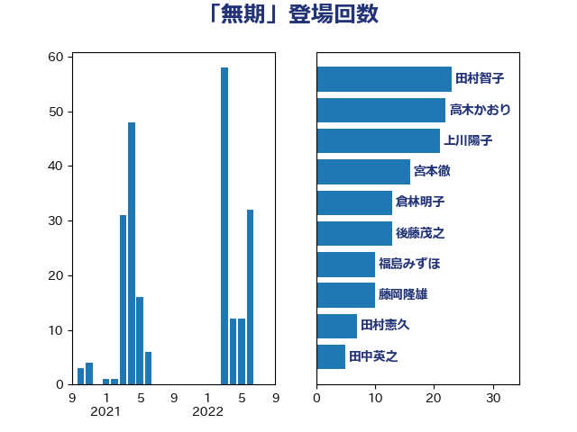

単語「無期」

| 田村智子 | 日本共産党 | 23 回 |
| 高木かおり | 日本維新の会 | 22 回 |
| 上川陽子 | 自由民主党 | 21 回 |
| 宮本徹 | 日本共産党 | 16 回 |
| 倉林明子 | 日本共産党 | 13 回 |
| 後藤茂之 | 自由民主党 | 13 回 |
| 福島みずほ | 社会民主党 | 10 回 |
| 藤岡隆雄 | 立憲民主党 | 10 回 |
| 田村憲久 | 自由民主党 | 7 回 |
| 田中英之 | 自由民主党 | 5 回 |
| 野間健 | 立憲民主党 | 4 回 |
| 小林鷹之 | 自由民主党 | 3 回 |
| 末松信介 | 自由民主党 | 3 回 |
| 岸田文雄 | 自由民主党 | 2 回 |
| 東徹 | 日本維新の会 | 2 回 |
| 金子恵美 | 立憲民主党 | 2 回 |
| 伊藤孝江 | 公明党 | 1 回 |
| 北側一雄 | 公明党 | 1 回 |
| 塩田博昭 | 公明党 | 1 回 |
| 大口善徳 | 公明党 | 1 回 |
| 大島敦 | 立憲民主党 | 1 回 |
| 川合孝典 | 国民民主党 | 1 回 |
| 本庄知史 | 立憲民主党 | 1 回 |
| 本村伸子 | 日本共産党 | 1 回 |
| 浜地雅一 | 公明党 | 1 回 |
| 清水貴之 | 日本維新の会 | 1 回 |
| 田村まみ | 国民民主党 | 1 回 |
| 磯崎仁彦 | 自由民主党 | 1 回 |
| 神谷裕 | 立憲民主党 | 1 回 |
| 稲富修二 | 立憲民主党 | 1 回 |
| 西銘恒三郎 | 自由民主党 | 1 回 |
| 高橋はるみ | 自由民主党 | 1 回 |